5月郑州工业自动化展：汇集多元领域自动化方案 助力企业转型升级
首页 / 5月郑州工业自动化展：汇集多元领域自动化方案 助力企业转型升级2022年中国工业机器人市场，全年出货量超28万台。预计2023年市场同比增速有望达10~15%，主要原因有：新能源市场对工业机器人需求仍将保持高增长，动力和储能共同驱动下锂电赛道高景气将延续，光伏、汽车电子等热门行业需求仍将持续释放；人口红利消退，劳动力供给减少，“机器换人”进程持续加速；工业机器人产品及应用案例更加丰富、成熟，用户导入门槛进一步降低；《“十四五”机器人产业发展规划》、《“机器人+”应用行动实施方案》、“双碳”等利好政策持续发力。
近年来，河南省充分发挥装备制造业优势，实施创新驱动发展战略，加快推进产业转型升级，以“设备换芯”“生产换线”“机器换人”为主的智能化改造迅速推进，制造业高端化、绿色化、数字化水平持续提升。
明星产品推荐
企业如何进行自动化与智能化转型升级？如何提升生产效率？第19届郑州工业自动化及机器人展以12大展馆，65000平方米展出面积，聚集2000+家参展商，将于2023年5月18-21日在郑州国际会展中心隆重启幕！展会吸引西门子，汇川，台达，英威腾，智微，德克威尔，克鲁斯，埃斯顿，广数，安川，唯恩，威浦，明纬，金升阳，美国依爱，法国科瑞朗，红旗，百灵等知名企业，帮助您解决企业生产升级改造中的各种痛点、难点问题。
西门子
工业PaaS平台
安川/河南创客
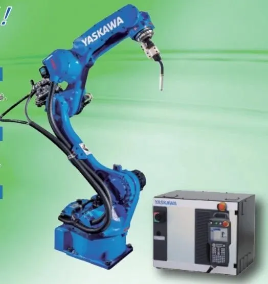
提高生产、设备更紧凑、提升导入、使用、维护的效率
汇川技术
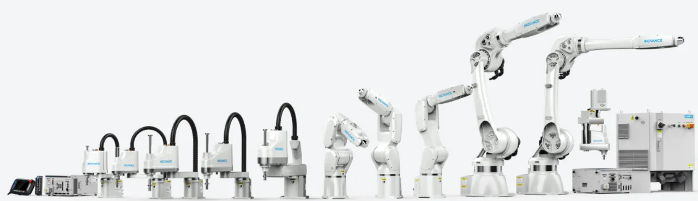
工业机器人
埃斯顿/郑州微力
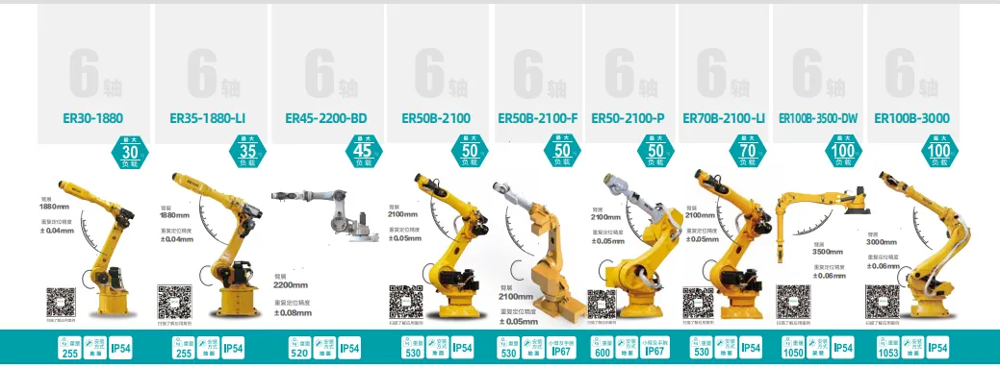
汇川/科威腾
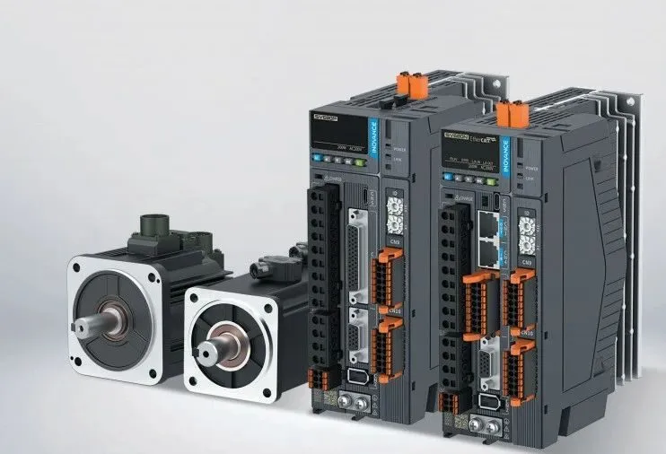
SV680系列旗舰型伺服驱动器
台达
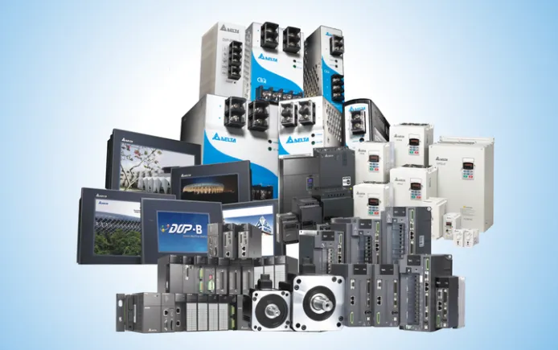
广数
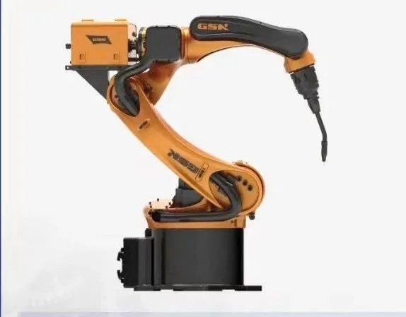
GSK RH06A2工业机器人
深圳智微
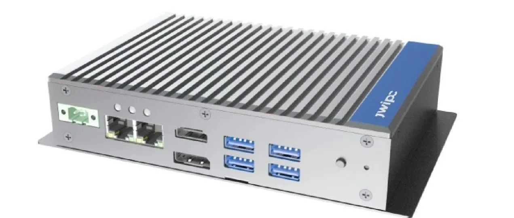
JEC-1300超紧凑型嵌入式工控机
南京德克威尔
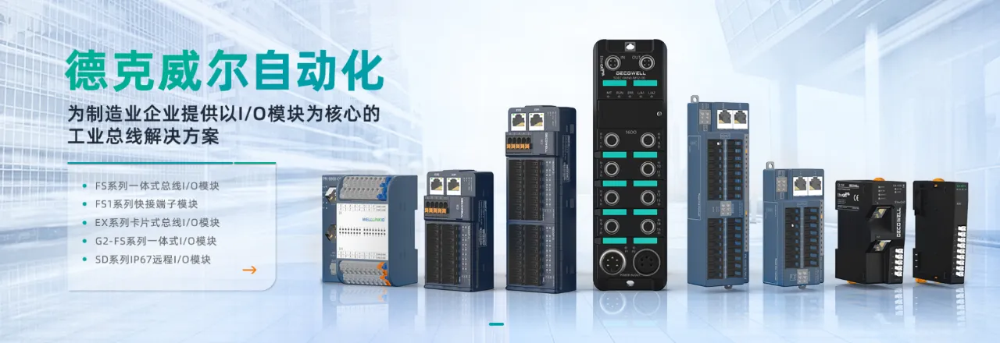
为制造业企业提供I/O模块为核心的工业总线解决方案
苏州明纬
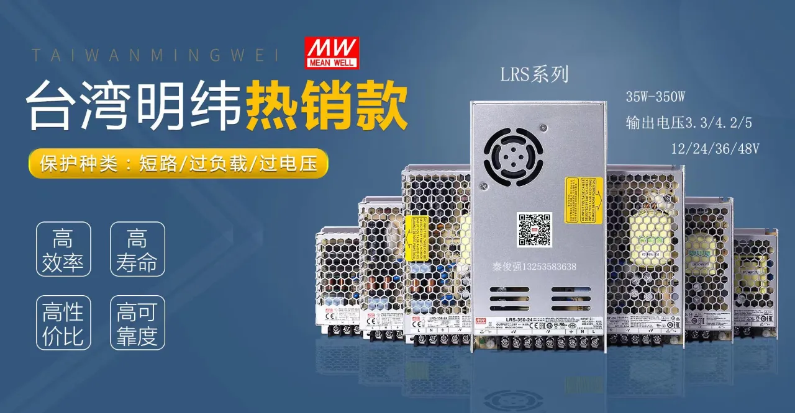
百灵气动
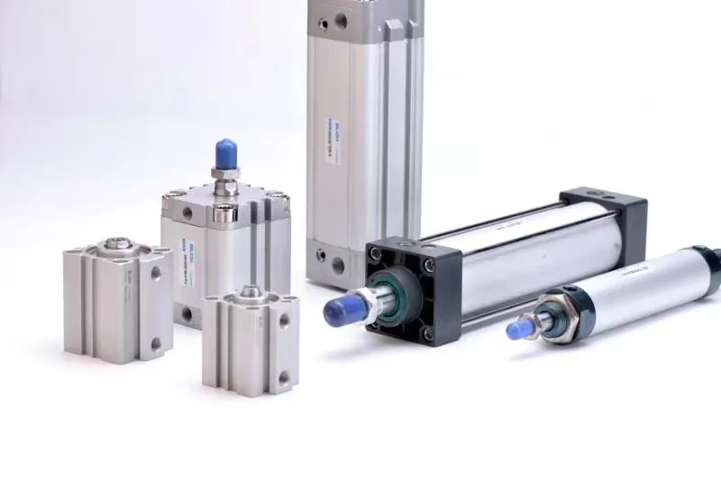
北京北成新控
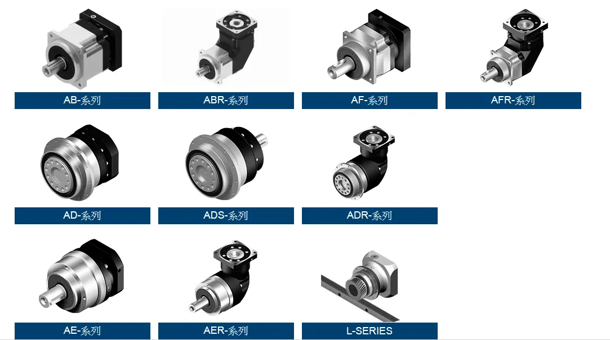
鸿华科技
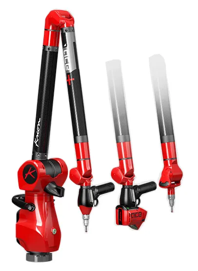
法国科瑞朗KREON - 扫描关节臂三坐标测量机ACE+ 7-25 / SKYLINE WIDE
SKF授权经销商--郑州旭瑞
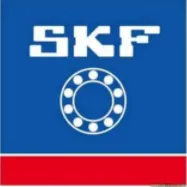
…………
更多企业及产品请莅临展会现场参观采购
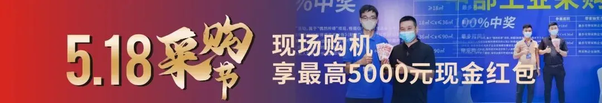
为助力制造业转型升级/提高上下游对接效率，降低企业采购成本，第19届郑州工业自动化展将继续举办5.18采购节以及采购对接会，并且调整了此次活动的奖项与细则，将购机补贴设置为最高5000元，切实为展商和采购商谋福利！力促现场交易，年中购机大促，不容错过！

END